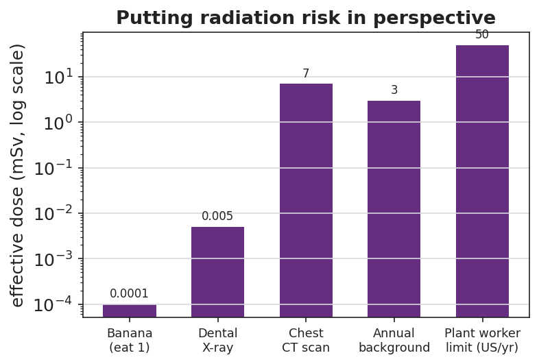
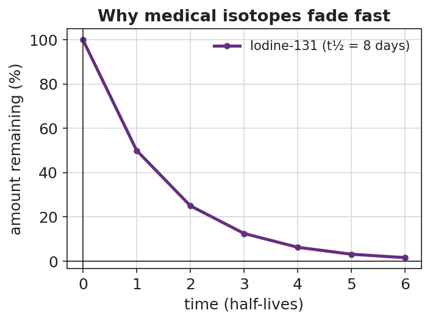

01 Phenomenon
An energy company has applied to build a nuclear power plant 15 miles from our school, and the town is split. Three sources arrive in the mail and online:
- Flyer 1 (pro-plant): carbon-free electricity for 60 years, hundreds of jobs, safety standards stricter than the coal plant it would replace.
- Flyer 2 (anti-plant): a photo of the abandoned city of Pripyat near Chernobyl with the caption “Do you want this next door?”
- Source 3 (a hospital): the radioactive iodine that cured a patient’s thyroid cancer comes from the same nuclear science that would power the plant.
Every source is about radiation — yet they point to opposite conclusions.
02 Driving question
Should our community accept a nuclear power plant nearby? How do we evaluate the competing claims — benefit and risk — fairly?
03 Notice & wonder
| I notice… | I wonder… |
|---|---|
Turn & Talk #1: All three sources are about radiation, but they push opposite conclusions. What information would you need to decide whether each flyer’s claim is actually true — not just loud?
04 Initial model
Before reading any case studies, make your best two-column list. Then circle the one benefit and the one risk you think matter most for the plant decision.
| Column A — BENEFITS of nuclear chemistry | Column B — RISKS of nuclear chemistry |
|---|---|
05 Investigate
Part 1 — Case-Study Jigsaw
Your group is assigned ONE case packet. Read it, then fill in the rating rubric. Score validity and reliability from 1 (weak) to 3 (strong).
Case A — Medical isotopes · Case B — Power generation · Case C — Nuclear weapons → circle the case your group has.
The dose chart below helps you put any radiation risk in perspective:

For the medical-isotope case, this decay curve shows why a radioactive isotope used in the body is not a permanent hazard:

| Rubric item | Your answer |
|---|---|
| The benefit this source claims | |
| The risk this source claims/implies | |
| Evidence the source gives | |
| Validity (1–3): does the evidence support the claim? | |
| Reliability (1–3): is the source trustworthy / repeatable? | |
| The dose or condition that decides benefit vs. risk |
Part 2 — Cross-Group Share
After the share-out, record the strongest claim from each of the other two cases.
| Case | Strongest benefit claim | Strongest risk claim |
|---|---|---|
| Medical isotopes | ||
| Power generation | ||
| Nuclear weapons |
Key question: Across all three cases, what is the ONE variable that decides whether radiation helps or harms?
06 Make it make sense
For each claim below, decide whether it is valid (evidence supports the conclusion), reliable (source is trustworthy/repeatable), explain your reasoning, and name the dose or control idea involved.
A flyer reads: “A nuclear plant uses fission, and an atom bomb uses fission, so a plant is basically a slow-motion bomb that will eventually explode.”
- Valid? (yes/no) and why: _______________________________________________
- What about dose/control makes this different? _______________________________________________
A hospital page reads: “Over the past 20 years, radioactive iodine (I-131) treated more than 100,000 of our thyroid patients with a documented success rate; the isotope’s 8-day half-life means it clears the body within weeks.”
- Valid? Reliable? _______________________________________________
- Using the decay curve, about what percent of the I-131 is left after about 24 days (3 half-lives)? _______________________________________________
A news post shows a 1986 photo of abandoned Pripyat and concludes: “This proves the proposed 2025 plant near us will become a wasteland too.”
- Is the conclusion valid? Why or why not? _______________________________________________
- What evidence would a valid safety argument about the 2025 plant actually need? _______________________________________________
07 Key vocabulary
- risk–benefit analysis
- a structured comparison that weighs the benefits of a technology (with its risks controlled) against its potential harms and against the realistic alternatives, in order to make a justified decision; not "is there any risk?" but "do the controlled benefits outweigh the harms?"
- validity
- whether the evidence actually supports the specific claim being made; a claim can reference true events and still be invalid if the reasoning from evidence to conclusion does not hold
- reliability
- whether a source is trustworthy and whether its result would hold up if checked or repeated; reliability is about the *source and repeatability*, while validity is about the *evidence-to-claim fit*
Use each term in a sentence about today’s phenomenon or your case study. Do not just copy the definition — use the word to describe something you read or judged.
risk–benefit analysis: _______________________________________________ _______________________________________________
validity: _______________________________________________ _______________________________________________
reliability: _______________________________________________ _______________________________________________
08 Revise your model
Return to your Initial Model two-column list. Add any benefits or risks you missed from the case studies. Then, for the one benefit and one risk you circled, add a dose/control note: what condition turns that radiation from helpful to harmful?
Then finish this Because / But / So sentence:
A nuclear power plant and a medical scanner both involve ionizing radiation because __________________________________________, but __________________________________________, so __________________________________________.
09 Exit ticket
- A campaign mailer states: “A power line near homes emits radiation, so it must cause the same cancers as a nuclear meltdown.” (Power lines emit low-frequency, non-ionizing radiation.) In one sentence, judge this claim’s validity — does the evidence support the conclusion?
- A nuclear plant worker’s annual occupational dose limit is about 50 mSv, and one chest CT scan is about 7 mSv. About how many CT-scans’ worth of dose is the yearly worker limit, and is the limit set above or below a single scan?
Setup: 50 ÷ 7 ≈ ______ CT scans. The limit is ______ a single scan.
- Name one real benefit and its paired risk of nuclear technology, and in one sentence state what variable decides which one you get.
Benefit: _________________ Paired risk: _________________
The variable that decides: _______________________________________________
10 Explore further
- Risk–benefit case-study stations (jigsaw): Three printed case packets — (1) Medical isotopes (Technetium-99m imaging and Iodine-131 thyroid treatment; tie to the decay curve in `figures/medical_isotope_decay.png`), (2) Power generation (a modern reactor fact sheet vs. the Chernobyl 1986 and Fukushima 2011 accident summaries), and (3) Nuclear weapons (a brief, age-appropriate historical and treaty-focused summary). Each group reads one packet, extracts the benefit claim and the risk claim, and rates each claim's validity and reliability on a shared rubric. No external URL is required; a one-page summary per case works well. For a digital option, a Javalab radioactive-decay simulation can run alongside the medical-isotope station so students *see* the isotope clearing the body.
- Dose-comparison reading: Students interpret `figures/radiation_dose_comparison.png` (a log-scale chart of typical effective doses) to answer: which everyday activities expose you to radiation, and how does the legal occupational limit compare to a single CT scan? This grounds the "is it dangerous?" question in numbers instead of fear.
- Structured debate: After the jigsaw, the class runs a 5-minute structured mini-debate on the driving question, with assigned roles (see Strategy Spotlight: ACTIVE LEARNING).